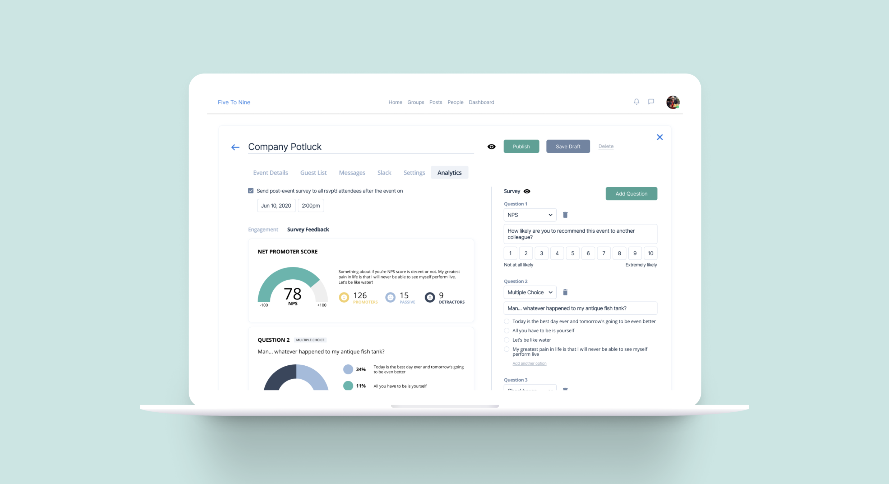
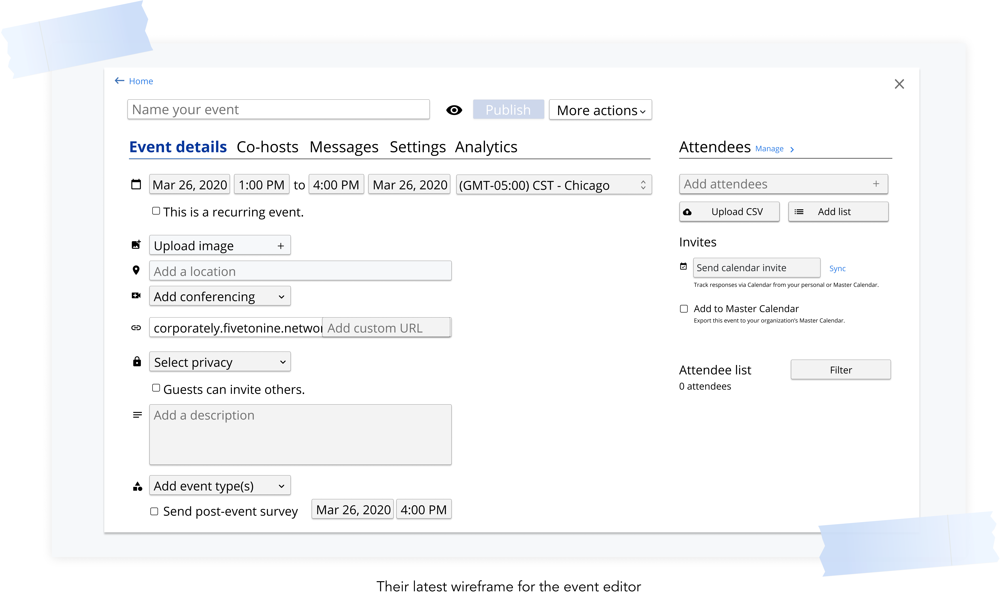
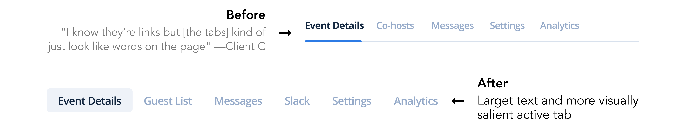
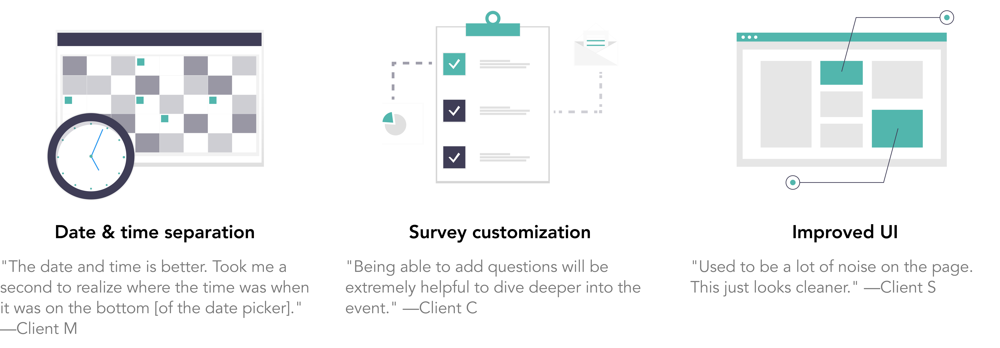
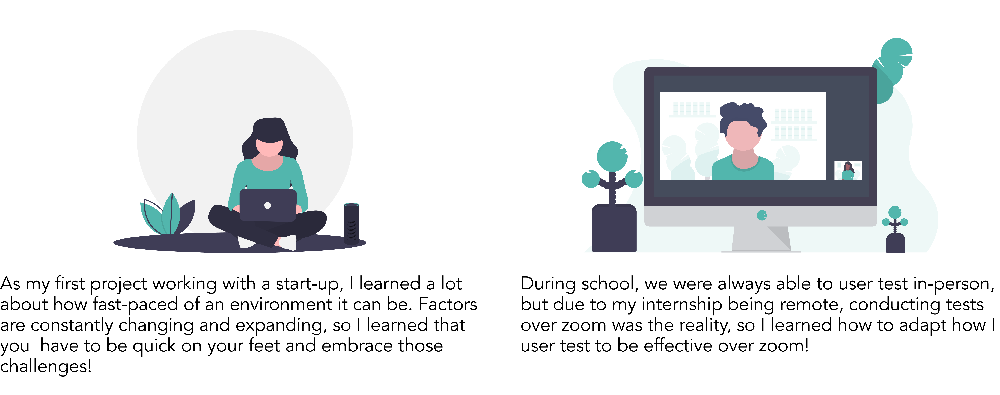

Five to Nine Event Editor

Internship
UI/UX Design
Figma
Miro
User Tests
Prototype
Hi-Fi Screens
5 weeks
background
Five to Nine’s platform makes it easy for organizers to create, manage, and promote their events by having all the tools they need in one place. At the start of my internship, their event editor update was in its beginning phases, so my first project was to validate their new flow through user testing and use those insights to develop a production-ready design.
what's the problem?
Before jumping into the new prototypes, I got familiar with the pain points in the current event editor by watching past user interview recordings and trying out the event editor myself!


building on existing wireframes
Now that I understood the event editor's problems, I was ready to look at the latest wireframes they had! The new flow they created moves away from having a long scrollable form to a more structured and flexible editor.

Overall, the direction of their wireframes addressed a lot of the current editor's pain points, so I worked on further improving the usability and aesthetic of their design!
What I liked about it:
- Clearer information hierarchy
- Inviting people is added to the flow
- Navbar allows greater flexibilty
- Time and date have separate input fields
What I could add to it:
- Option to customize the post-event survey
- Improve flow for inviting people
- Bring more delight by improving the aesthetic
- Maintain consistency throughout design
learning from the competition
Before improving the latest wireframes, I did a competitive analysis to see how other sites handle event creation and management. Specifically, I wanted to assess their visual decisions and learn what inputs they include & how they handle capturing information.
The biggest takeaway from exploring Slack, Google Calendar, and Evite was that they have clean designs and make information digestable by clearly labeling and organizing inputs. This makes the tedious process of inputting information seem easy and even delightful, which I want to implement in Five to Nine's event editor!
And while these are all great tools for creating and sharing events, they all (excluding Evite's premium plan) lack the capability to fully manage and analyze their events in real-time, which I saw as an opportunity to make Five to Nine stand out by improving their event editor's management and analytic tools.
the first iteration
Now that I had more knowledge of the domain, I was ready to start designing! I took the low-fidelity wireframes created before my internship and worked on creating a high-fidelity prototype for user testing.
user testing & key takeaways
After building out a testing environment in Figma, I was ready to test the prototype with clients! The focus for testing was to validate that the new flow and features save users time in creating and communicating events by hopefully reducing points of confusion and adding flexibility. Here are some of the key takeaways:
1. Gap between our mental model and the user’s mental model of what the attendee list is

2. The attendee list isn't needed on every tab
We had the attendee list on every tab because who you're inviting is a big component of your event so we wanted to make it easily accessible and discoverable, however...
100% of testers failed to notice that the attendee list was on every tab

And when we pointed this out to them, 50% of users found it confusing to have it on every tab and the other 50% noted its benefits (e.g. less clicks, can always see who they've invited), but this would only be beneficial if they noticed it, which they didn't 🙃
Solution: Remove the attendee list from every tab & add an "attendees" tab in the navbar where users can edit the attendee list
3. The different question types were confusing
"What's the difference between multi-select and single-select?" —Client A

Solution: Use more descriptive, everyday language
4. The navbar isn't noticeable because it looks like regular text

Solution: Add a solid background to the active tab and increase text size
5. Difference between sharing options isn't clear
"Send calendar invite" sends guests a google calendar invite to the event they can RSVP to, while "Add to master calendar" simply puts the event on the company-wide google calendar for people to see.
75% of testers were unclear how they were different
Although there are already descriptions about what each do, testers pointed out that since they were both listed under the headline "Invites", they associated them together as both being invitations.
Solution: Add headers and space between the two options so they appear visually different
6. Features that were well received

the final design
After iterating on the user testing insights, I presented the following high-fidelity screens and final prototype.
reflections + lessons learned
